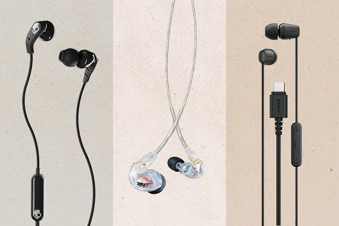

Fault Diagnosis
Identification and assessment of mobile phone faults before repair or maintenance work is carried out.
I provide hands-on GSM phone repair and maintenance services, practical phone repair training and apprenticeship, and selected mobile phone accessories from my workshop in Umuahia, Abia State.
Technical repair services and practical learning for individuals, apprentices and organized training programmes.
Phone repair is an important part of my practical technical work. My services combine hands-on GSM repair, mobile device maintenance, technical problem-solving and practical knowledge sharing.
I work with mobile devices by identifying faults, carrying out appropriate repair and maintenance tasks, and testing devices after repair.
Alongside repair services, I also provide practical training for people interested in learning GSM phone repair and maintenance.
My work also includes supplying selected mobile phone accessories for everyday device users.
Repair, troubleshooting, maintenance and practical technical training are approached with attention to proper procedures, equipment and device handling.
Bring your device for assessment and practical repair support based on the fault identified.
Identification and assessment of mobile phone faults before repair or maintenance work is carried out.
Practical repair and replacement work for supported mobile phone hardware faults.
Support with selected software-related mobile phone problems and device troubleshooting.
Assessment and repair support for selected battery, charging and power-related issues.
Practical maintenance and device care to help keep supported mobile devices functional.
Devices are checked after repair work to verify the relevant functions addressed during the repair process.
I provide practical GSM phone repair training for individuals, apprentices and organized learner groups.
The training focuses on understanding mobile devices, identifying faults, using repair tools and developing practical repair and maintenance skills.
Training is structured around practical technical activities, device handling, troubleshooting and repair procedures.
Ask About TrainingI currently teach the GSM aspect of a Federal Government skills-training programme through Softicu, an organization in Umuahia, Abia State that contracted me to train its learners.
This work involves practical instruction focused on developing useful GSM phone repair and maintenance skills.
Organizations running technical, vocational, youth-development or skills-training programmes can engage me to deliver practical GSM phone repair instruction.
Technical instruction focused on practical GSM phone repair and maintenance skills.
Demonstration and guided practical work using mobile devices and repair procedures.
Training designed around useful technical knowledge, practical activities and workplace-oriented skills.
If your organization needs a GSM phone repair trainer for a skills-development programme, let's discuss the training requirements.
Discuss Training RequirementsIndividuals who want to learn phone repair can also receive practical training through an apprenticeship arrangement at my shop.
The apprenticeship approach provides an opportunity to learn by observing, practising and working with real mobile devices and repair activities.
Ask About ApprenticeshipSelected phone accessories are available at the shop for customers and mobile-device users. Availability may vary according to stock.

Selected charging accessories for compatible mobile devices.

Selected charging and data cables for compatible devices.

Earphones and selected mobile audio accessories.

Protective accessories for compatible mobile devices.

Selected accessories for convenient mobile power.

Selected screen protection accessories for compatible devices.
Looking for a particular accessory? Contact the shop to confirm current availability.
Ask About AccessoriesPhone repair is practical technical work carried out with real mobile devices.
I provide practical GSM instruction for learners through organized training and apprenticeship.
Training emphasizes practical activities, device handling and troubleshooting.
My technical work is supported by a broader understanding of software, digital tools and technology.
Bring your device for repair, enquire about GSM training or apprenticeship, discuss an organizational training programme, or ask about available phone accessories.